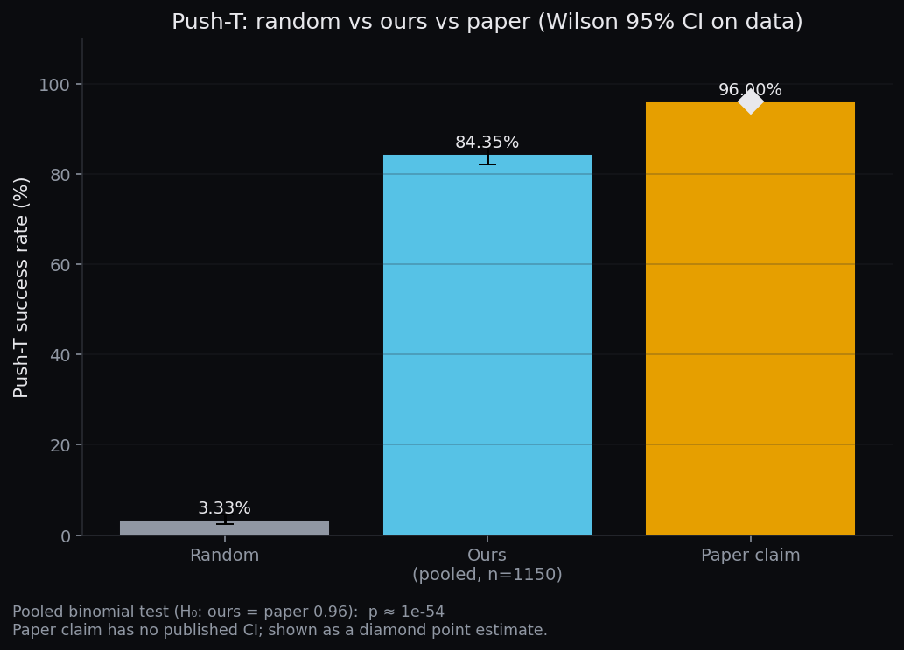
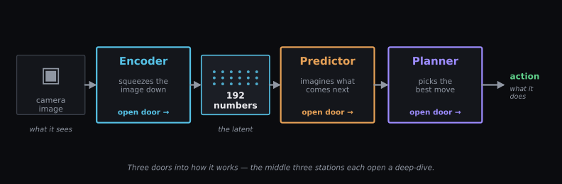
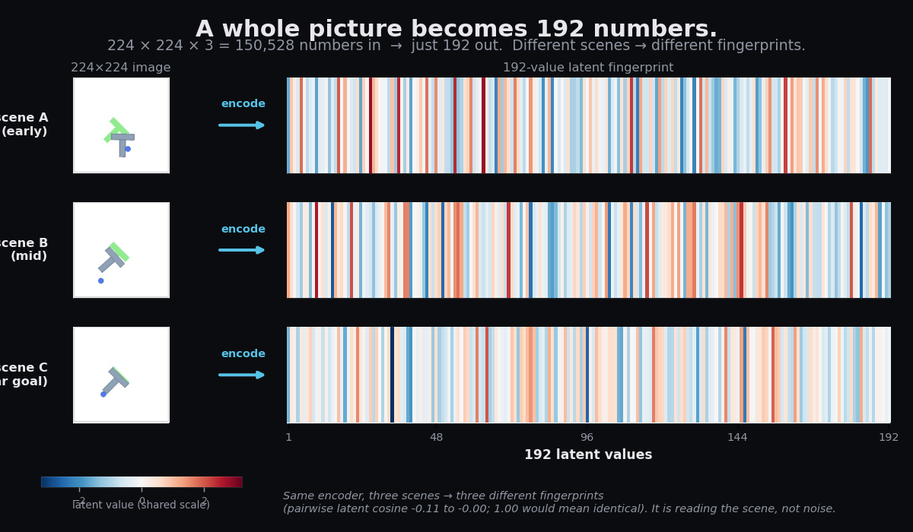

We rebuilt LeWorldModel from scratch. It works — but stops short of the paper.
First, just watch the difference between guessing and learning: three policies, one task.
One number carries the whole story: how often each policy actually lands the T on target.

See the gap that won't close
This isn't seed luck: here's our whole range of results, and where the paper sits relative to it.

Honestly: we got 84%, the paper reports 96% — about 12 points short, and that gap is far too big to be luck.
The numbers behind this
Success rate 84.35% across all 1,150 episodes from 23 seeds (95% range 82.13–86.33). The paper reports 96.0%. A one-sided test of our 970/1,150 successes against the paper's claim rules out sampling noise from our seeds (p ≈ 3×10⁻⁵⁴). A random-action policy scores 3.33% (5/150). Full per-seed breakdown and the three candidate explanations live on the Results page.
Three doors into how it works
The recipe is three pieces. Here's the whole flow, and where each piece lives.


How it sees
An image becomes 192 numbers, and the model predicts how they change — never redrawing pixels.
Open the World Model
How it decides
It dreams up many short plans, scores each against the goal, and keeps the best.
Open the Planner
The honest gap
Every seed agrees on 84% — and the paper's 96% sits outside the range.
Open the ResultsThe same recipe, a second task
Does the recipe transfer? A first, cautious look: the identical model class on a new task.
Want the full second-task story? Open the TwoRoom page →